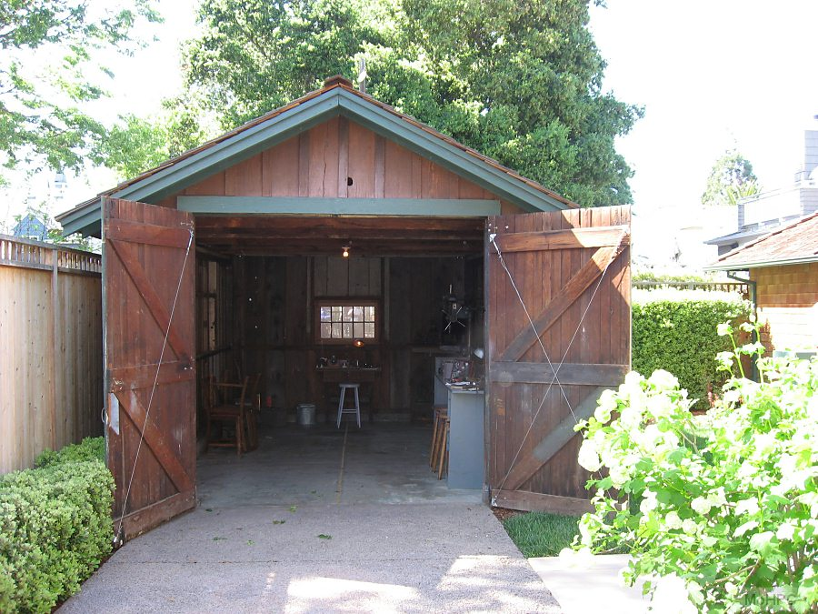
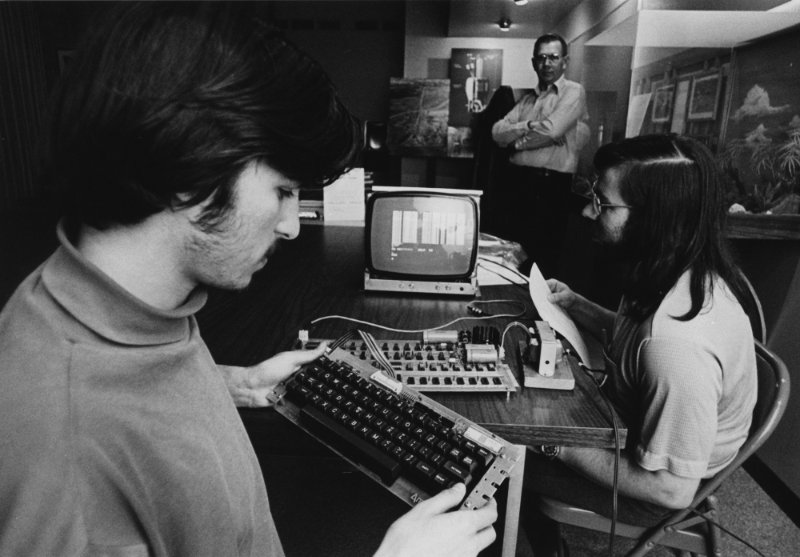

History
Silicon Valley's history, separate from the larger history of California, begins with a company that operates to this day. Hewelett-Packard, now a major manufacturer of computers, computer parts, and enterprise-level technology solutions began as a leader in the military technology boom of the World War II era, when the United States Federal Government was willing to pay handsomely for research and development of technologies that could help with the war effort. During this time Fredrick Terman was a young professor at Stanford University, the first to hold tenure in Electronic Engineering. Terman saw the opportunity to make money and expand his fledgling department; he encouraged and mentored graduate students Hewelett and Packard as they developed the Hewlett-Packard Audio Oscillator on a contract with the federal government. After a brief wartime stint at Harvard, Terman returned to Stanford to find a newly formed corporation, Hewelett-Packard Incorporated; he continued to mentor the two founders as they built their digital empire. During this time of great growth for the area, Terman led the charge to create the Stanford Industrial Park, with the vision being to create a "community of technical scholars" and an atmosphere of social and intellectual camaraderie among developers, modeled after the atmosphere of academia. Varian Associates, founded by another trio of Terman's graduate students, was the first company to set up shop in the newly created industrial park.
With the new connections that Terman had worked to create, Stanford flourished as a technical campus. Terman found success, being promoted to university leadership and gained great respect among technical peers. He was among the popular opinion at Stanford at the time, believing that Silicon Valley and the Intellectual-Industrial complex that he was helping to create was the way that the western portion of the country would flourish, that the east coast based companies would never give the west the chance they deserved. To this point he is quoted as saying that Silicon Valley ought to be the "West serving the West". While the area today serves the world as a whole, Terman succeeded in forcing the once east coast centric economy to notice and begin taking the west coast more seriously.
For his work as a company developer and visionary, many call him the "Father of Silicon Valley." Hewelett-Packard has grown to encompass a significant part of the enterprise computation market space, but Silicon Valley still recognizes its roots in the small garage that the founding pair first worked out of, with said garage now a museum dedicated to the technology of the time.
Beyond Terman, Stanford is deeply connected with the development of Silicon Valley. Another instance of the connection is in the Homebrew Computer Club, which was a computer usergroup in the early 1970s that formed around the idea that computers could be used for more than research. This group, meeting at Stanford, was among the first to see a demo of the Apple 1, the prototype created by Steve Jobs and Steve Wozniack. The group later evolved to include not only computer enthusiasts, but venture capitalists from the famous and nearby Sand Hill Road, who were on hand to witness what is now known as the "Mother of All Demos", where in the same day the inventors of the modern computer mouse and a precursor to the internet presented their work for simultaneous academic and investment consideration. This tradition of integration of academia and business continues to this day and shapes the corporate landscape in the Silicon Valley area. The demos were received well, and cemented the growing tech scene in the Stanford area as the world leader in technology.